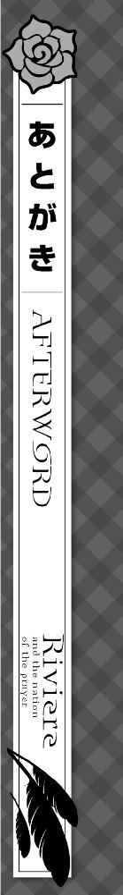

初めまして久しぶりです白石定規ですどうもどうも。
お会いできて光栄です。
商業作家になって初の新シリーズです。と言いつつ実際のところ前作主人公がばりばり出てたりしますので新シリーズかどうかは微妙なところですけど。続編と言ってもいいのやもしれません。
ご存じでない方に説明しますと、今シリーズ「リリエールと祈りの国」はＧＡノベルで刊行されている「魔女の旅々」と世界観を共有したものになります。ちなみにそっちの主人公はイレイナさんです。二章を読んだ時点でお分かりかと思いますがイレイナさんは程よく性根が腐ってます。そんな子を主人公として三巻程度書いてきました。よろしくね！（ステマ）
需要と機会があればそちらの続きも書きたい所存です。いやはやほんとに。
今シリーズでは「祈り」をテーマに書いてみました。何でも願いが叶う国とかあったら素敵じゃないですか。「へへへ……こんな国あったら僕まっさきにニートになるな……へへ……」とまったくもって頭の悪そうな薄気味悪い笑みを浮かべながら世界観設定を練った僕でした。けれど願いが叶うといっても、「猿の手」しかり、願いを叶えるには代償がつきものですし、そもそも願いを叶えたあとに気が変わって後悔することだってままあると思います。そんな感じで祈りの国のプロットが出来上がりました。
今回は世界観設定やマクミリアの出自に関する事情等もあり、書きたくてもページ数や話の流れ的に書けなかった話もありましたので、もしも続きが出せるのでしたら、今度は更に好き放題書きたいと思います。あとマクミリア視点以外の話も少々増やしたいです。そんな野望を抱いております。
では謝辞を。
担当Ｍさま。
プロットを初めて提出したときから、世界観や登場人物の裏事情に関して細部にわたりあれこれツッコミを頂いてようやくまともな形となれました。いつも本当にありがとうございます。
あずーる様。
今回も滅茶苦茶可愛いイラストを多数ありがとうございます。まさかイレイナさんがイメチェンするとは思わなかったです。控えめに言ってハーフアップってやっぱり神ですよね。
並びに本作の刊行に携わったすべての方々。本当にありがとうございました。
作品を読んでくださった皆様に愛される作品となれるよう祈りながら、こんな感じであとがきを締めくくりたいと思います。それでは、二巻でお会いできれば、また！